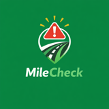

MileCheck Highway Report
Winter reaches the roads while roadwork keeps going
MileCheck Highway Report, October 2026
Winter showed up on the roads in October, while roadwork kept going. MileCheck archived 37,890 alerts that transportation agencies across all 50 states, British Columbia, Alberta and Manitoba published in October, each counted once. The first 23 snow and ice alerts reached the lower 48, and I-80 was the busiest interstate.
Watch the October report in three minutes →
A report for every state and province. Pick yours.
Each one has the routes that had the most crashes, closures and roadwork in October, and how the month compares with the state's earlier months.
Pick your state
Pick your province
Where these numbers come from
What changed in October
- First snow23 alerts in the lower 48 named snow, ice or chains on the road, most of them in California and Montana. Counting British Columbia, 92.
- Roadwork24,878 roadwork alerts. Roadwork was 66% of all alerts.
- BorderThe longest wait was 5 hr at Eagle Pass, Texas, on Oct. 13. From U.S. Customs and Border Protection, saved every hour.
- Seattle drawbridgesSeattle's five drawbridges opened 706 times.
Winter closures
Live chain and winter road map →
Roads that close for winter, by state →
Some mountain roads close every winter. These are the ones on our list. Tap a state for each road's usual closing and reopening times and the agency source. We update the list each month through winter.
The snow map counts alerts only. Daily road-surface reports, such as Alaska's icy patches and packed snow on the Dalton Highway every day of October, are road conditions, not alerts, and are on the live chain and winter road map instead.


Roads that usually close for winter
Crashes
Live crash and closure alerts on the map →
Road feeds in 43 states and provinces posted 2,316 crash alerts in October. Each agency decides which crashes appear on its feed. Your state's page shows which routes had the most crash alerts.
Arkansas, Hawaii, Maine, Manitoba, New Hampshire, North Dakota, Oklahoma, South Dakota, Vermont and West Virginia posted no crash alerts in October. Arkansas, Hawaii, Maine, Oklahoma, South Dakota and West Virginia have posted none in any month since our archive began in August.

Closures and roadwork
Live closure and roadwork alerts on the map →
Road feeds posted 5,399 closure alerts and 24,878 roadwork alerts in October. Your state's page shows which routes had the most.

Where the alerts were
The 10 states and provinces with the most alerts archived in October. Each feed reports differently, so this shows volume, not which roads were most dangerous. New York, Kentucky and Virginia are left out because their feeds changed in late September.
By region
States grouped by region, so you can find yours quickly. Tap the state picker at the end for any one state.
Pacific Northwest
3,234 alerts. Washington had the most, led by I-405 (414). Most crash alerts: Oregon, 138.
California and the Southwest
6,178 alerts. California had the most, led by US-101 (282). Most crash alerts: California, 295.
Rockies and Plains
3,730 alerts. Colorado had the most, led by I-70 (426). Most crash alerts: Colorado, 61.
Texas and the South Central
2,552 alerts. Texas had the most, led by I-35 (153). Most crash alerts: Louisiana, 18.
Midwest
6,453 alerts. Wisconsin had the most, led by I-41 (665). Most crash alerts: Wisconsin, 90.
Southeast
7,167 alerts. North Carolina had the most, led by I-40 (265). Most crash alerts: Kentucky, 215.
Northeast
8,576 alerts. New Jersey had the most, led by I-80 (394). Most crash alerts: Massachusetts, 48.
Freight corridor grid
The interstates with the most alerts in October, added up across every state they cross. For fleets and dispatchers planning long hauls.
| Interstate | Alerts | States | Most alerts in | What they were |
|---|---|---|---|---|
| I-80 | 826 | 11 | New Jersey 394, California 153, Nevada 96 | 5% crash · 74% roadwork |
| I-10 | 691 | 8 | Arizona 235, Louisiana 147, California 109 | 12% crash · 50% roadwork |
| I-41 | 665 | 1 | Wisconsin 665 | 3% crash · 37% roadwork |
| I-95 | 650 | 15 | Connecticut 169, Virginia 159, North Carolina 156 | 12% crash · 49% roadwork |
| I-70 | 638 | 9 | Colorado 426, Ohio 91, Pennsylvania 44 | 3% crash · 79% roadwork |
| I-64 | 499 | 6 | Virginia 278, Kentucky 185, Illinois 13 | 14% crash · 49% roadwork |
| I-405 | 477 | 3 | Washington 414, California 62, Oregon 1 | 2% crash · 93% roadwork |
| I-5 | 441 | 3 | California 213, Washington 142, Oregon 86 | 11% crash · 60% roadwork |
For newsrooms
Free to quote with credit to the MileCheck Highway Report and a link to this page. Each state page has its own.
Border waits
Waits to enter the United States in standard passenger lanes, October, from hourly U.S. Customs and Border Protection readings. Averages use every valid hourly reading. Dates are local to each crossing.


Most of October's longest waits came on Saturday and Sunday afternoons and evenings, when weekend traffic heads back into the United States. The feed we read publishes waits into the United States only.
When each crossing is usually busiest and quietest →
See all border crossings and their cameras →
Traffic cameras

A report for every state and province. Pick yours.
Each one has the routes that had the most crashes, closures and roadwork in October, and how the month compares with the state's earlier months.
Pick your state
Pick your province
What's new at MileCheck
New: the MileCheck dash display

A small screen sits on your dash or air vent and shows the highway and mile marker you're on. It has its own GPS chip and stored mile marker data. It works without your phone or a cell signal. The first prototype runs on I-90. The plan is all 50 states.
If you want a mile marker display on your dash, join the early access list. Sign-ups help us fund it.
In the app
Navigate to a mile marker on the correct side of the highway. The route uses the right exits and overpasses, so a crew is not sent to the wrong side of a divided highway.
Watch the videoThe Menu has a Cameras page. Scroll through nearby DOT cameras, pick a highway and star the ones you check most.
Camera mapCameras by cityOn iPhone, the Snowplows map layer shows where plow trucks last reported. Only some states and provinces publish live plow positions. In those, the Mile tab shows the nearest plow ahead on your road.
iPhone version 1.10.44 and Android version 1.10.40 are in the stores. Make sure your app is up to date.
Roads and closures
Each truck's last reported location, in 14 US states and 3 Canadian provinces. Only some agencies publish live plow positions.
Pages for 63 ski areas, with the roads in, their cameras and the snow forecast.
New pass pages for Coquihalla, Sea-to-Sky, Rogers Pass, Kootenay Pass, Wolf Creek, Monarch, Mt Hood, Santiam, White Pass and more.
Late-November driving guides for I-5, I-40, I-70, I-80 and I-90 are up ahead of Thanksgiving. We'll keep them updated through the holiday. The November report will cover Thanksgiving travel.
A current storms page, updated twice a day.
A map of 20,031 open public railroad crossings at road level on state highway systems, from FRA records.
Live traffic camera pages for 161 US cities, each with every DOT camera in and around that city on one page.
For fleet software, mobile apps and DOTs
A free 14-day API test key, 100 calls a day. Live border waits are in the Business plan.
Corridor display boards are TVs in truck stops, travel centers or diners. They show live road conditions for the highway outside. The board is free for the store. The store gets a share when its sponsor slot sells. One sponsor per screen. First up is US 2 over Stevens Pass.
For storesFor advertisersIf you build software and want mile markers in it, the dataset is available as a file: GeoJSON and CSV, all 50 states and 10 Canadian provinces and territories, with a monthly snapshot of what changed. Flat yearly fee, no call limits. A free sample is on the page.
Other apps by the developer
Mountain Visibility shows whether the mountain is out right now. It covers Mount Rainier, Mount Hood, Mount Baker, Mount St. Helens, Denali, the Olympics, Mount Angeles and Mount Baldy.
App StoreGoogle PlaySeattle Drawbridges shows which of Seattle's five drawbridges are up right now. It works on iPhone and in CarPlay.
App StoreGoogle PlayKeep up with MileCheck

If the report is useful, we would be glad if you downloaded MileCheck or shared it with a friend who drives. Live state DOT feeds in all 50 states, British Columbia, Alberta and Manitoba, with your nearest mile marker.
App StoreGoogle PlayOnce a month, plus special reports like Thanksgiving travel. No spam.
Sign upSend it to someone who drives for work. On a phone, Share opens your text and email apps. On a computer, email it or copy the link.
Want a map we do not have yet, or something in the app? Tell us. Every note gets read.
Email feedback@milecheckapp.comA report for every state and province. Pick yours.
Each one has the routes that had the most crashes, closures and roadwork in October, and how the month compares with the state's earlier months.
Pick your state
Pick your province
Built from MileCheck's archive of state DOT road feeds. A new Highway Report comes out at the start of every month.